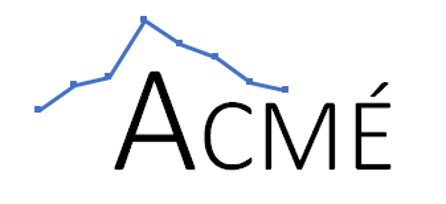
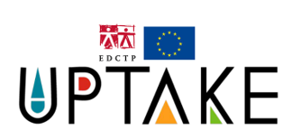

Published articles

Compensate at your own risk: Heterogeneity in compliance with preventive behaviors through the lens of economic and social preferences - A. Lacombe and M. Guillon (2026) - Accepted for publication in the International Journal of Health Economics and Management

Does improving diagnostic accuracy increase artificial intelligence adoption? A public acceptance survey using randomized scenarios of diagnostic methods - Y. Hswen, I. Rafaï, A. Lacombe, B. Davin-Casalena, D. Dubois, T. Blayac, B. Ventelou (2024) - Published in Artifical Intelligence in Health
Working papers

Diagnostic Test Value: How Treatability and Transmissibility interact with individual traits - A. Lacombe
Preferences for comprehensive HIV prevention services among women and girls in Nairobi and Kampala: a discrete choice experiment - UPTAKE research team
Climate-Informed Resource Allocation for Infectious Disease Prevention: A Spatial Economic Evaluation - A. Lacombe
Ongoing projects

ACME: Improving the acceptability and accessibility of preventive countermeasures, including vaccines, in emerging epidemics - Principal investigator: Prof. J. Mueller (EHESP and Insitut Pasteur) - Funding: ANRS MIE (PEPR France 2030)
Role: Post-doctoral researcher (work package 2)

UPTAKE: Universally Accessible HIV Prevention Technologies for African Girls and Young Women through Knowledge Applied from Behavioural Economics - Principal Investigator: Prof. M. Gafos (LSHTM, Department of Global Health and Development)
Role: Member of the research team
Peer review
Plos One (2023)